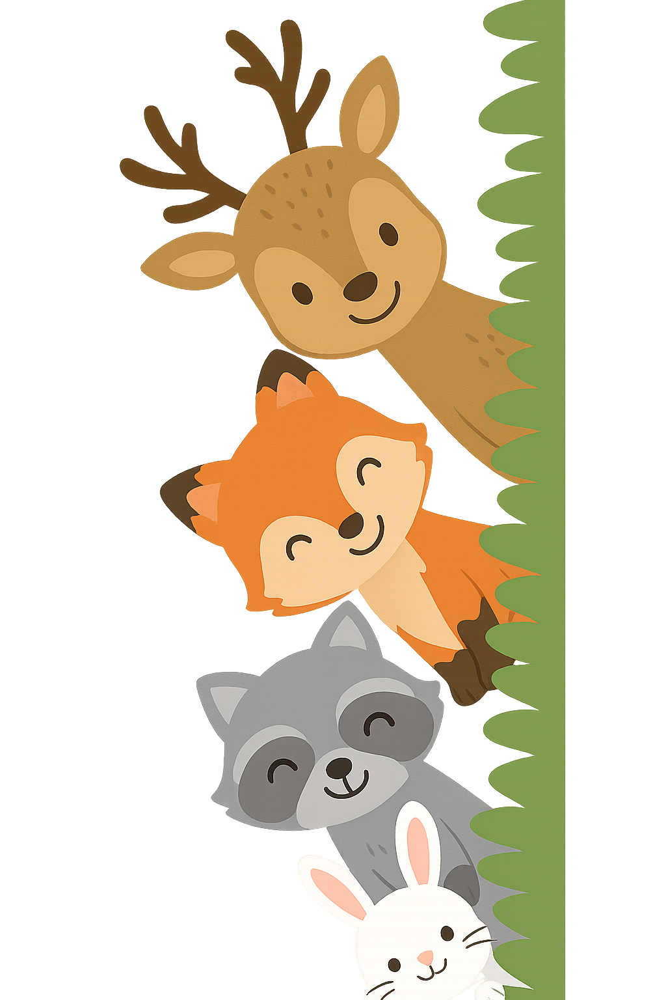

Somos una página web desarrollada por estudiantes universitarios de las carreras Ing. TIC'S, Ing. Industrial e Ing. Mecatrónica. Este proyecto nace con la intención de apoyar el aprendizaje temprano de los niños, brindándoles una herramienta digital diseñada especialmente para ellos. Nuestro sitio fue creado pensando en los más pequeños del hogar, con el objetivo de que puedan aprender operaciones matemáticas básicas de manera fácil, interactiva y divertida.
